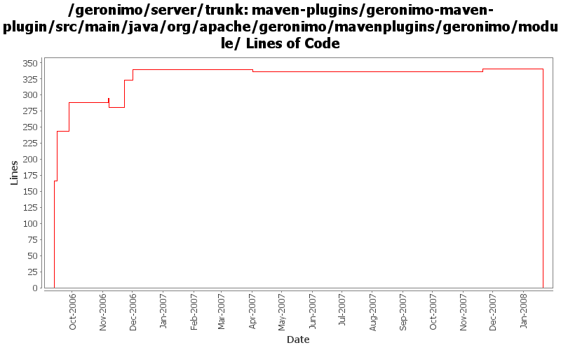

[root]/maven-plugins/geronimo-maven-plugin/src/main/java/org/apache/geronimo/mavenplugins/geronimo/module

| Author | Changes | Lines of Code | Lines per Change |
|---|---|---|---|
| Totals | 66 (100.0%) | 658 (100.0%) | 9.9 |
| jdillon | 39 (59.1%) | 424 (64.4%) | 10.8 |
| kevan | 9 (13.6%) | 135 (20.5%) | 15.0 |
| prasad | 17 (25.8%) | 94 (14.3%) | 5.5 |
| gdamour | 1 (1.5%) | 5 (0.8%) | 5.0 |
(GERONIMO-3771) Moved maven-plugins/* to buildsupport/*, updated groupId to org.apache.geronimo.buildsupport
0 lines of code changed in 9 files:
When distributing w/o the explicit selection of a target, we only distribute
to the first target returned by DeploymentManager. This first target is
the default target, or configuration store, and users can specify an abstract
name query (in EditableKernelConfigurationManager) to identify this default
target.
Now that multiple configuration stores per server are better handled
out-of-the-box, we can re-enable the "clustered" configuration stores.
Also, let's more the rmock dependency to testsupport-common so that we
can use it from all our tests.
This fixes GERONIMO-3612 - When no target configuration store is explicitly
specified while installing a configuration, the configuration should be
installed to a default configuration store
5 lines of code changed in 1 file:
Replace genesis plugin-support with mojo plugin-support
*FIX SOME EVIL INDENT TOO*
28 lines of code changed in 1 file:
Update assembly names to match what we have
Using javaee instead of j2ee
1 lines of code changed in 1 file:
* a failed deployment would stop the tests for everybody.
* stopOnFailure config option will now let the tests proceed even if one bad deployment took place.
9 lines of code changed in 1 file:
* if module already exists, don't throw an exception. This could use some more work on it.
9 lines of code changed in 1 file:
* if module already undeployed, don't throw an execption.
49 lines of code changed in 1 file:
GERONIMO-2537 Update the src headers in the non-module files. They need to be compliant with the new ASF src header and copyright policy (http://www.apache.org/legal/src-headers.html). I also did some cleanup of the src headers and tried to get them in a consistent format
135 lines of code changed in 9 files:
renamed getGoalName to getFullClassName to refelect the previous change.
5 lines of code changed in 5 files:
* getGoalName had hardcoded strings in them (mojo names)
* changed them to return the packageName + className
* surefire reporting needs the package name.
8 lines of code changed in 5 files:
removed a commented line. <br>
assert file != null <br>
in distribute()
0 lines of code changed in 1 file:
GERONIMO-2513
Allow deployment of just a plan.xml only.
14 lines of code changed in 3 files:
Update to reflect latest genesis changes
1 lines of code changed in 1 file:
(GERONIMO-2419) Enabling logging for start-server, hooked up reporters API for exception handling, Adding a Surefire reporter which will output reports in a surefire manner, so we can re-use the surefire html report fluff to visualize
Massaged from reporters.patch by Prasad
50 lines of code changed in 7 files:
Fix some method modifiers, doExecute should be protected
5 lines of code changed in 5 files:
(GERONIMO-2359) Applying slighlty modified patch from Prasad to improve module handling
173 lines of code changed in 6 files:
(GERONIMO-2359) Applied modified versions of patches submitted by Prasad (thanks)
Moved all server related mojos to the o.a.g.m.g.server package
Added all new module mojos to the o.a.g.m.g.module package
Renamed install, start and stop goals to install-assembly, start-server and stop-server
Added aliases for install, start, stop that point to install-assembly, start-server, stop-server
Adding (augmented from patches) start-module, stop-module, deploy-module and undeply-module
Added aliases deploy and undeploy that point to deploy-module and undeply-module
Added list-modules goal to show what modules are running and non-running
Module operations show tree-like view of targetId's when available
166 lines of code changed in 9 files: